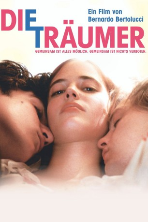

#4930 Die Träumer
Alternativ: The Dreamers
 
 IMDB-Wertung: 7.2 / 10
IMDB-Wertung: 7.2 / 10  Metascore: 0
Metascore: 0 
Eine Hommage an die Cinémathèque francaise und das Kino. Der Film des italienischen Regisseurs Bernardo Bertolucci handelt von den jugendlichen Zwillingen Theo und Isabelle sowie dem amerikanischen Studenten Matthew, die sich 1968 in der elterlichen Pariser Wohnung verschanzt haben und dort immer intimer miteinander werden, während draußen auf den Straßen die Studentenproteste toben.
Jahr: 2003
Dauer: 114 Minuten
FSK: 16
Land: England Studio: Concorde FilmverleihTonspuren: DTS - ,
Untertitel:
Auflösung: 1080p (1920x1080) Größe: 11161 MB
Genre: Drama, Liebe
Regisseur:  Bernardo Bertolucci
Bernardo Bertolucci
Drehbuch: Sunait Chutintaranond
Soundtrack:
Darsteller:
 Michael Pitt als Matthew
Michael Pitt als Matthew Eva Green als Isabelle
Eva Green als Isabelle Louis Garrel als Theo
Louis Garrel als Theo Anna Chancellor als Mother
Anna Chancellor als Mother Jean-Pierre Léaud als Himself
Jean-Pierre Léaud als Himself Jean-Paul Belmondo als Himself , archive footage, uncredited
Jean-Paul Belmondo als Himself , archive footage, uncredited- Henri Langlois als Himself , archive footage, uncredited
 Jean Seberg als Herself , archive footage, uncredited
Jean Seberg als Herself , archive footage, uncredited François Truffaut als Himself , archive footage, uncredited
François Truffaut als Himself , archive footage, uncredited- Aleksandra Yermak als Student May 68 , uncredited
- Robin Renucci als Father
- Jean-Pierre Kalfon als Himself
- Florian Cadiou als Patrick
- Pierre Hancisse als First Buff
- Valentin Merlet als Second Buff
- Lola Peploe als The Usherette
- Ingy Fillion als Theo's Girlfriend
- Gilbert Adair als Man in the Louvre , uncredited
Datei: X:\2003(N-Z)\Träumer, Die (2003, FSK16, 1920x1080).mkv seit 02.12.2016
Festplatte: HD 2003-2004-2005(A-F)
 Es gibt insgesamt 46 Filme in der Gruppe '2003(N-Z)'
Es gibt insgesamt 46 Filme in der Gruppe '2003(N-Z)'